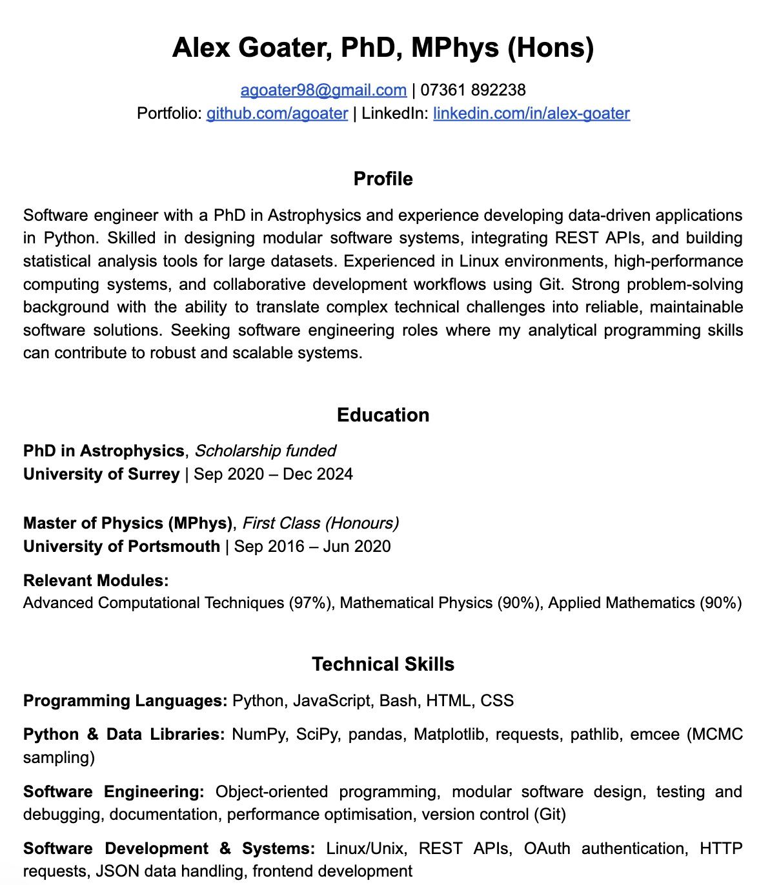

Dr Alex
Goater

My journey to becoming an analytical problem solver flourished during my doctoral research at the
University of Surrey,
where four years of working with complex galactic simulations and large datasets trained me to
approach problems
systematically and think at scale.
Beyond providing a technical foundation, the academic world also taught me the value of
collaborative problem-solving,
how to present complex ideas clearly, and to embrace feedback as a tool for improvement rather
than criticism.

My PhD in astrophysics was a rigorous training ground in advanced problem-solving, statistical
analysis, and systems
thinking. Over four years, I learned to break complex problems into manageable parts and build
robust data pipelines
in Python using statistical modelling techniques.
A major part of my research involved developing a modular Python toolkit for galaxy morphology
analysis. The
software used Bayesian parameter estimation and ensemble MCMC sampling with emcee to fit
elliptical exponential
surface brightness profiles to cosmological simulation data.
This work led to a first-author publication in a leading astrophysics journal and reflects my
ability to deliver
reliable, well-structured solutions to complex data problems. The skills developed through this
work are directly
transferable to software engineering and other data-driven roles.
This portfolio website showcases my ability to build clean, responsive web interfaces using core
frontend
technologies. Built from scratch with vanilla HTML, CSS, and JavaScript, it demonstrates how
performant websites can
be created without framework dependencies.
The codebase uses semantic HTML, organised CSS with custom properties, and modular JavaScript
for DOM interaction
and event handling. This structure keeps the site maintainable while supporting a smooth and
consistent user
experience.
Interactive features such as the scroll progress bar and viewport-based effects are implemented
using native browser
APIs, highlighting my understanding of core web technologies and clean frontend development
practices.
This project is a practical demonstration of my ability to build lightweight automation tools in
Python that
integrate external services into a reliable workflow. Using the Twitch Helix API alongside
yt-dlp, I
developed an application that authenticates with Twitch, retrieves archived video metadata, and
automates
the download of VODs from a chosen channel.
The codebase applies modular design principles, separating authentication, user lookup, API
interaction, and
download handling into clear functional components. It also demonstrates secure credential
management using
environment variables, structured JSON parsing, and practical file-handling logic including safe
filename
generation and duplicate detection.
The overall implementation reflects a focus on writing maintainable, efficient software that
solves a
real-world problem through clean integration of APIs and automation. It highlights
skills that are directly transferable to backend development and data-driven software
engineering roles.